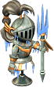

地上地下城
夢見之塔
迪格邦克
妖獸窟
海賊村地城
海賊要塞
海灘衝刺
不可思議地城
冰之城
怪物城堡
滿月的櫻花村
寂靜路易斯
諾克斯要塞
異次元地帶
公會城地城
鏡之城
【冰之城】1F迴廊｜雷卡房間｜特里培房間｜普羅斯米房間｜2F迴廊｜黛瑪房間｜斯帕克羅房間｜歐爾多房間｜里特房間｜3F迴廊｜呆歐斯房間｜魯培羅房間｜亞泰歐房間｜阿澤拉房間｜雅潔泰斯房間｜4F迴廊1｜4F迴廊2｜4F迴廊3｜4F迴廊4｜4F迴廊5｜裴莉亞房間｜梅蕾德房間｜羅西房間｜瑪拉房間｜皮樂夏房間｜吉哈姆房間｜貝魯拉房間｜6F迴廊｜7F迴廊｜8F迴廊｜9F迴廊｜10F迴廊｜露台｜亞空間｜女王之間
※各怪物的編輯請由標題的鉛筆圖示進行。掉落道具的編輯也可以從掉落道具欄的[e]進行。
出現怪物
馬凱拉（紫）
阿納坎（紅）
冰塊（綠）
[艾梅斯]（綠）
[艾梅斯]（紫）
伊克勒斯（黃-弱）
伊克勒斯（黃-強）
［哥斯特女僕］
奇蹟箱子（紅）
奇蹟箱子（淺綠）
馬凱拉（紫）
 馬凱拉（紫） 馬凱拉（紫） | Lv | AC | MC | AAR | SAR | 掉落道具 |
| HP:13184 | 95 | -80 | 10 | 48 | -18 | 荷普利、[118]馬凱拉變身捲軸、破損項鍊電漿、破損耳環電漿、破損武器電漿、破損足部電漿、力量集中[e] |
| 經驗值 | 名聲值 | 金錢 | 攻擊屬性 | 防禦屬性 | ||
| 11650 | 475 | 570 | 隨機 | 隨機 | ||
| STR | DEX | INT | WIS | CON | ||
| 31 | 21 | 21 | 21 | 81 |
瀕死時逃跑
阿納坎（紅）
 阿納坎（紅） 阿納坎（紅） | Lv | AC | MC | AAR | SAR | 掉落道具 |
| HP:11509 | 95 | -50 | 10 | 84 | -34 | 荷普利、[119]阿納坎變身捲軸、煙霧彈、迴旋攻擊、力量集中、煙幕彈、奧爾提納刃[e] |
| 經驗值 | 名聲值 | 金錢 | 攻擊屬性 | 防禦屬性 | ||
| 12300 | 485 | 646~650? | 隨機 | 隨機 | ||
| STR | DEX | INT | WIS | CON | ||
| 11 | 51 | 61 | 151 | 81 |
阿納坎箭
冰塊（綠）
| 冰塊（綠） | Lv | AC | MC | AAR | SAR | 掉落道具 |
| HP:200 | 70 | 100 | 1 | 1 | 99 | 冰石、冰之果實、舊硬幣、銅幣[e] |
| 經驗值 | 名聲值 | 金錢 | 攻擊屬性 | 防禦屬性 | ||
| 300 | 20 | 10 | - | - | ||
| STR | DEX | INT | WIS | CON | ||
| 81 | 21 | 21 | 21 | 81 |
死亡時偶爾召喚[艾梅斯]（綠）
[艾梅斯]（綠）
| [艾梅斯]（綠） | Lv | AC | MC | AAR | SAR | 掉落道具 |
| HP:60216 | 70 | -55 | 5 | 35 | 30 | 荷普利、附魔屠刀、附魔綠地戰用鑽頭、檸檬之帽、力量軍刀、卡塔爾鐮刀[e] |
| 經驗值 | 名聲值 | 金錢 | 攻擊屬性 | 防禦屬性 | ||
| 10590 | 800 | 1060 | 隨機 | 隨機 | ||
| STR | DEX | INT | WIS | CON | ||
| 81 | 21 | 21 | 21 | 81 |
冰投擲 破壞治癒※從冰塊（綠）及奇蹟箱子出現
[艾梅斯]（紫）
| [艾梅斯]（紫） | Lv | AC | MC | AAR | SAR | 掉落道具 |
| HP:31800 | 70 | -80 | -25 | 35 | 30 | 荷普利、力量軍刀[e] |
| 經驗值 | 名聲值 | 金錢 | 攻擊屬性 | 防禦屬性 | ||
| - | 800 | 1120 | 隨機 | 隨機 | ||
| STR | DEX | INT | WIS | CON | ||
| 81 | 21 | 21 | 21 | 81 |
冰投擲 破壞治癒※從奇蹟箱子出現
伊克勒斯（黃-弱）
 伊克勒斯（黃-弱） | Lv | AC | MC | AAR | SAR | 掉落道具 |
| HP:150 | 70 | 40 | 1 | 25 | 0 | 荷普利、舊硬幣[e] |
| 經驗值 | 名聲值 | 金錢 | 攻擊屬性 | 防禦屬性 | ||
| - | 5 | 1 | 隨機 | 隨機 | ||
| STR | DEX | INT | WIS | CON | ||
| 81 | 21 | 21 | 21 | 81 |
備註
伊克勒斯（黃-強）
| 伊克勒斯（黃-強） | Lv | AC | MC | AAR | SAR | 掉落道具 |
| HP:33461 | 95 | -80 | 5 | 25 | 0 | 荷普利、舊硬幣、[121]伊克勒斯變身捲軸、解毒藥水、染色劑製造法[？？？][e] |
| 經驗值 | 名聲值 | 金錢 | 攻擊屬性 | 防禦屬性 | ||
| 14950 | 605 | 698~700? | 隨機 | 隨機 | ||
| STR | DEX | INT | WIS | CON | ||
| 180 | 21 | 21 | 21 | 81 |
備註
［哥斯特女僕］
| ［哥斯特女僕］ | Lv | AC | MC | AAR | SAR | 掉落道具 |
| HP:28800 | 80 | 55 | 55 | 127 | 0 | [124]哥斯特女僕變身捲軸[e]、光之魔導士魔法袍 |
| 經驗值 | 名聲值 | 金錢 | 攻擊屬性 | 防禦屬性 | ||
| - | - | - | - | - | ||
| STR | DEX | INT | WIS | CON | ||
| 31 | 200 | 175 | 51 | 200 |
女僕魔法攻擊※雪怪蜂巢被破壞時大量召喚
奇蹟箱子（紅）
 奇蹟箱子（紅） 奇蹟箱子（紅） | Lv | AC | MC | AAR | SAR | 掉落道具 |
| HP:50 | 70 | 100 | 1 | 1 | 99 | 冰之果實、銀幣、銅幣[e] |
| 經驗值 | 名聲值 | 金錢 | 攻擊屬性 | 防禦屬性 | ||
| - | - | - | - | - | ||
| STR | DEX | INT | WIS | CON | ||
| 81 | 21 | 21 | 21 | 81 |
備註
奇蹟箱子（淺綠）
| 奇蹟箱子（淺綠） | Lv | AC | MC | AAR | SAR | 掉落道具 |
| HP:50 | 70 | 100 | 1 | 1 | 99 | 舊硬幣[e] |
| 經驗值 | 名聲值 | 金錢 | 攻擊屬性 | 防禦屬性 | ||
| - | - | - | - | - | ||
| STR | DEX | INT | WIS | CON | ||
| 81 | 21 | 21 | 21 | 81 |
備註